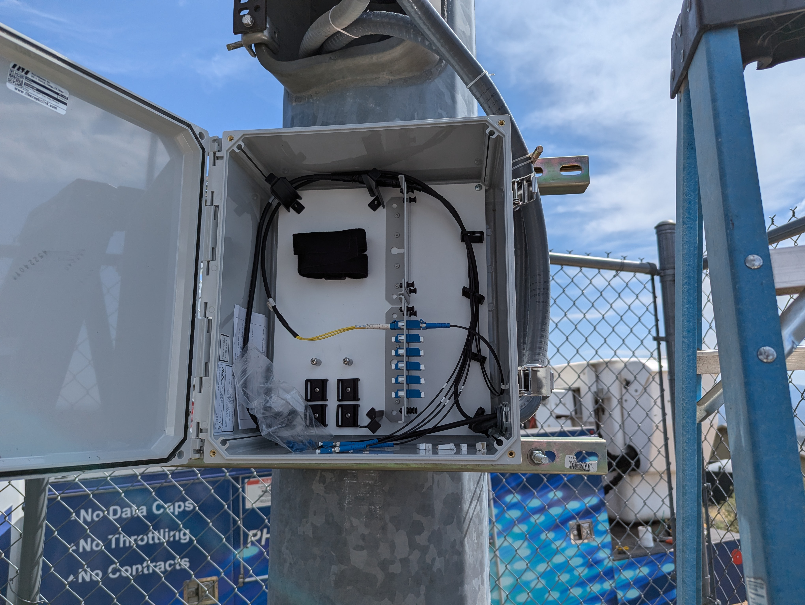
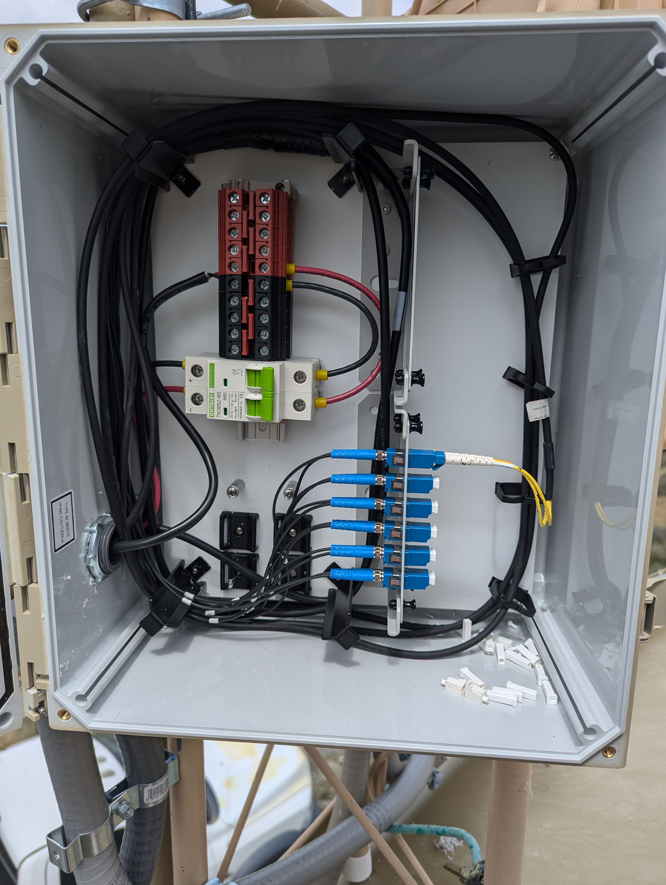
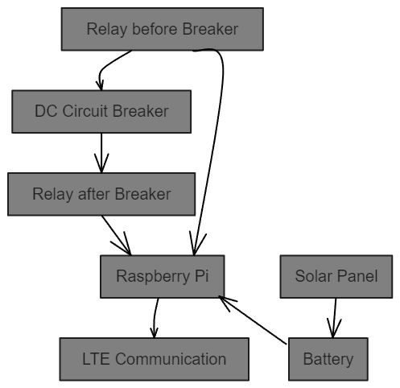
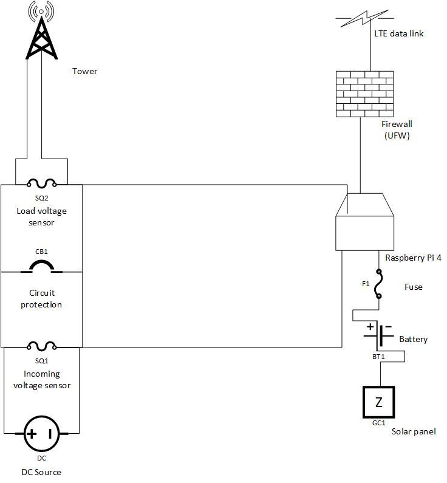
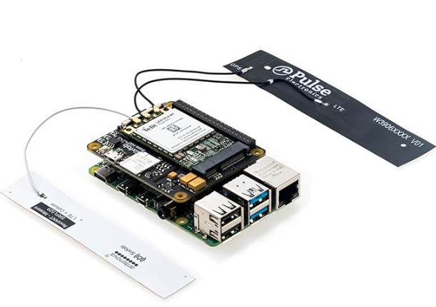
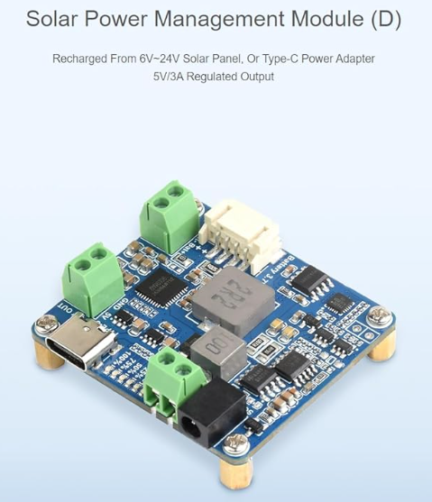

Innovation Claim
This project combines power and fiber distribution in a modular tower-mounted unit designed to reduce cable runs, simplify installation, and support future site expansion. The planned addition of circuit monitoring and remote fault reporting is intended to help technicians identify power problems from the ground, reducing unnecessary diagnostic climbs and improving maintenance efficiency.
Project Description
I developed this project in response to challenges I encountered while designing and installing fixed wireless sites. The first two iterations introduced fiber distribution followed by DC circuit protection and power distribution near the tower-mounted radios. My current focus is building an off-tower test and display module to demonstrate the distribution concept and develop the monitoring functions. The revised design will use an Arduino-based controller with compatible LoRaWAN hardware to transmit circuit status and fault information. This is a solo project involving hardware integration, programming, networking, and security for connected devices.
Progress Update:
No additional project work has been completed since the previous module. The following updates describe changes in project direction and planned work. I recently changed jobs and no longer have access to the first two field installations. Although photographs remain available to document those iterations, I cannot use the installations for further testing or a live demonstration. To address this setback, I plan to build an off-tower test and display module that can be used for development, simulated fault testing, and presentation.
The planned monitoring design is changing from a Raspberry Pi and cellular connection to an Arduino-based controller and LoRaWAN. Component selection, gateway arrangements, programming, and testing remain to be completed. The earlier solar and battery concept will be reevaluated after the revised hardware and its power requirements are established. Independent operation during a site outage remains a design goal and has not been demonstrated.
Current Status and Remaining Work
The completed work consists of the two earlier physical distribution iterations documented below. Arduino-based monitoring, LoRaWAN reporting, and the off-tower module are planned features and have not yet been demonstrated. Remaining work includes selecting the controller, radio, and suitable circuit-sensing components; assembling the module; programming fault detection; establishing the reporting path; and verifying that received information matches the simulated circuit conditions. Security work will include planning device authentication and protecting communication credentials.
Proposed Timeline to Functionality
During Week 2, my proposed focus is to finalize the demonstration scope, select compatible components, confirm access to a LoRaWAN gateway and supporting services, and begin assembling the test module. My target for the end of Week 3 is a minimum working demonstration that detects a simulated power circuit fault and transmits its status over LoRaWAN to a receiving application where it can be viewed. This target depends on component availability and successful integration. After the basic demonstration works, I plan to refine the display, test repeated fault and recovery conditions, and document the results with photographs and video.
Previous Field Installations
These photographs document earlier stages of development. Following my job change, these installations are no longer accessible for project testing or demonstration.
First Iteration: Fiber Distribution

While working for my previous employer, I designed this first iteration to improve fiber distribution near the fixed wireless base nodes. The design addressed cable organization and future site expansion.
Second Iteration: DC Protection and Distribution

The second iteration added DC circuit protection and power distribution. This reduced the cabling required for the installation by eliminating the need for up to six individual copper runs along the full tower span. This installation demonstrates the physical distribution concept, but it does not demonstrate the planned Arduino and LoRaWAN monitoring.
Monitoring Design and Reference Materials
Earlier Monitoring Concepts


These diagrams document the earlier monitoring concept. They are retained as development history and need to be revised to reflect the Arduino-based controller, LoRaWAN communication, and off-tower test module.
Revised Direction: Arduino and LoRaWAN
The planned test module will use an Arduino-based controller to read circuit-sensing inputs and identify simulated power faults. Compatible LoRaWAN hardware will provide the wireless reporting connection. The specific controller, sensing components, gateway, and receiving application have not yet been selected. Testing will need to verify the complete path from a circuit condition at the module to a visible status update in the receiving application.
Previous Cellular Concept

This image illustrates the previous Raspberry Pi and cellular approach. It is included for historical reference and does not represent the current planned hardware.
Power Supply Planning

The earlier design considered solar charging and a separate battery supply for the monitoring system. Power requirements will be reassessed for the Arduino and LoRaWAN configuration before selecting a battery capacity or charging system. The initial test module will focus on demonstrating circuit monitoring and reporting. Outage reporting would also require the gateway and supporting communication services to remain available.
SIP Brief
The embedded document below is the previously published SIP Brief. A revised version with dated and highlighted progress is pending. It needs to include the job change, loss of access to the field installations, off-tower module, Arduino and LoRaWAN design direction, and updated timeline.
Open the previously published SIP Brief PDF
Previous Project Videos
These videos document earlier project stages and may describe features or hardware choices that have since changed.
SIP Pitch

Design Prototype Video

Peer Feedback
Does the project documentation clearly explain the innovation and distinguish the completed field installations from the planned test module? I would also appreciate feedback on the website's professionalism and whether the photographs and explanations make the project understandable to someone without a telecommunications background.